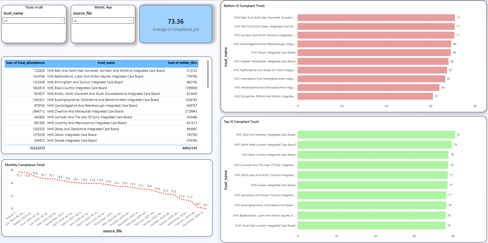

A Python data pipeline processing monthly NHS A&E attendance records across English trusts — revealing a systemic failure to meet the 95% national target, with wide variation between organisations.
This project automates the ingestion and analysis of NHS A&E waiting time data. It reads multiple monthly Excel files published by NHS England, cleans and standardises the data, and loads everything into a SQLite database for SQL querying and Power BI visualisation.
The central metric is the 4-hour compliance rate — the percentage of patients seen, treated, and discharged or admitted within 4 hours of arrival. The national target is 95%. No trust in England met this target across the 2024–2026 period analysed.
Power BI dashboard showing monthly compliance trends, best and worst performing trusts, and the gap between actual performance and the 95% national target.

Five headline findings from the analysis of NHS A&E performance across English trusts between 2024 and 2026.
Follow these steps to run the data pipeline locally. Requires Python 3.12 and Git.
git clone https://github.com/nikitpatel01/Nhs-ae-analysis.git cd Nhs-ae-analysis
python -m pip install pandas openpyxl sqlalchemy xlrd matplotlib
Place NHS A&E Excel files (.xls or .xlsx) into the data/ folder. Update folder_path in load_data.py if needed.
python load_data.py
Outputs nhs_ae.db (SQLite) and nhs_ae_clean.csv ready for Power BI.